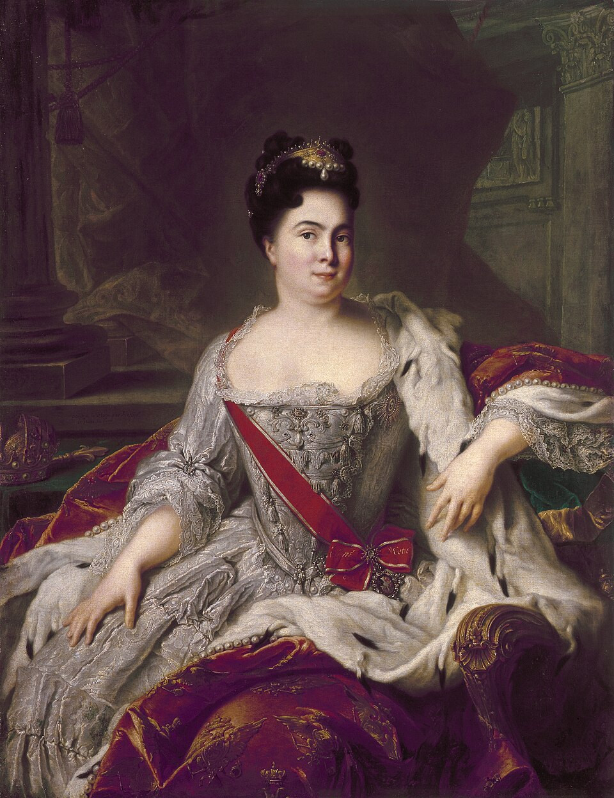

Екатерина I Алексеевна — первая женщина на российском престоле и супруга Петра I Великого. После смерти Петра в 1725 году она стала императрицей Российской империи, положив начало эпохе дворцовых переворотов.
Екатерина происходила из простой семьи и не имела знатного происхождения. Однако благодаря своему характеру, преданности и поддержке Петра I она заняла важное место при дворе. Пётр доверял ей государственные дела и часто брал с собой в военные походы и путешествия.
После смерти Петра Великого между представителями знати началась борьба за власть. При поддержке гвардии и ближайших соратников Петра Екатерина смогла занять престол. Её правление стало важным этапом в истории России, так как впервые государством официально управляла женщина.
Во время правления Екатерины I значительное влияние на управление страной имел Верховный тайный совет. Несмотря на короткий срок правления, в стране продолжались реформы Петра I, укреплялись армия и флот, развивались наука и образование.
В 1725 году была основана Петербургская Академия наук — один из крупнейших научных центров России. Екатерина поддерживала развитие культуры и стремилась сохранить преобразования, начатые Петром Великим.
Хотя Екатерина I правила всего два года, её восшествие на престол стало важным событием для Российской империи. Она вошла в историю как первая российская императрица и символ начала новой эпохи в управлении государством.
